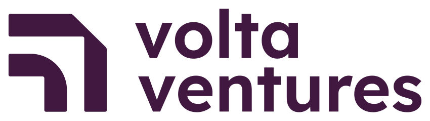

Wie we zijn
COI is een vereniging zonder winstoogmerk die in 1976 werd opgericht als Centrum voor Overheidsinformatiek. Sinds de herstructurering van 2019 richt de vereniging zich volledig op de ondersteuning van digitale innovatie in Vlaanderen.
COI functioneert als denkgroep en verleent financiële steun aan initiatieven die zowel innovatief als maatschappelijk relevant zijn voor de uitbouw van de informatiemaatschappij. De vereniging keert geen winst uit: middelen die uit participaties terugvloeien, worden opnieuw ingezet voor initiatieven die aan de doelstellingen van de vzw beantwoorden.
Ontdek onze werking
Criteria
De voorwaarden waaraan een initiatief moet voldoen, de domeinen waarop we werken en hoe een aanvraag verloopt.
Naar de criteria →Initiatieven
De initiatieven die COI vzw sinds 2013 heeft ondersteund, en welk maatschappelijk vraagstuk elk daarvan aanpakt.
Bekijk de projecten →Historiek
Van Centrum voor Overheidsinformatiek in 1976 tot de huidige vzw voor digitale innovatie.
Lees de historiek →Bestuur
De tien bestuurders die het beleid van de vereniging bepalen en toezicht houden op de werking.
Bekijk het bestuur →Contact
Adres, contactpersoon en een formulier voor vragen over onze werking of over een initiatief.
Neem contact op →Recent ondersteund

2025 Volta Ventures Seed Fund Geld voor jonge softwarebedrijven nog vóór er een product of klant is, precies waar de meeste financiers afhaken. 2025 Capricorn Healthtech Fund II Zorgtechnologie die de lange weg van laboratorium tot patiënt ook effectief aflegt.Werkt u aan een initiatief?
Digitalisering die een maatschappelijk vraagstuk aanpakt, met een Vlaamse verankering. Voldoet uw project daaraan, dan horen we er graag over.